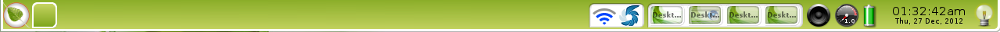

[kliknite na bilo koju sliku za uvećanje]

Virtualni desktopovi organizuju vaš rad
U zavisnosti od Profila koji ste odabrali prilikom početnog podešavanja, možete ali i ne morate imati Pejdžer Gedžet(Pager Gadeget) na vašem desktopu. Virtuelni Desktopovi mogu biti korisni za organizaciju jer vam omogućavaju grupisanje određenih programa za jedan desktop, dok bi se druga grupa programa nalazila na drugom desktopu.
Neprovidna grafika na desktopu predstavlja sve desktopove koji se koriste, i svaki će imati malu ikonicu koja označava trenutno aktivne programe.
Postoji nekoliko načina za prebacivanje iz jednog u drugi,treći... desktop:
- Ako imate Pejdžer Gedžet(Pager Gadget), samo kliknite na grafiku onog desktopa na kome želite da se trenutno nalazite.
- Koristite prečice na tastaturi: Ctrl+Alt + <ArrowKey> u smeru u kome želite da se krećete.
- Izaberite svoj željeni desktop preko Main Menu>Desktop>Virtual.

Ceo desktop je Meni(Menu)
Levi klik miša bilo gde na desktopu aktiviraće Main Menu, odakle možete pokrenuti programe, podesiti podešavanja, ugasiti sistem i tako dalje. Ovo je standardno(default) ponašanje na novoj(fresh) instalaciji BodhiLinux-a. Većina ljudi smatra takvo podešavanje veoma pogodnim. Za one koji to ne misle, promena podešavanja funkcionalnosti miša(mouse-binding), levi klik kome je dodeljena funkcija "Prikaz Glavnog Menija(Show Main Menu)" se lako može ukloniti/podesiti u: Main Menu>Settings>All>Input>Mouse Bindings, i tu se nalazi sve ostalo vezano za ostala podešavanja funkcionisanja miša.
Desni klik miša na desktop će izbaciti Omiljeni Meni(Favorites Menu). Pošto po instalaciji sistema nema ubačenih Omiljenih programa, Omiljeni Meni se neće pojaviti na desni klik miša. On čeka da vi sami napravite izbor omiljenih programa koje ćete ubaciti u ovaj meni!

Mnoštvo Gedžeta za prikaz informacija o sistemu
Mnoštvo Gedžeta su alatke koji prikazuju informacije o sistemu kao što su status baterije, sat, itd. Gedžeti vam takođe omogućavaju interakciju sa sistemom na određeni način, kao što je na primer podešavanje jačine zvuka. Mnoštvo Gedžeta podržavaju opciju više instanci istovremeno, omogućavajući da ih stavite na različite lokacije, kao što su Police(Shelves) (videti Shelves sekciju) ili direktno na Desktop.
Oni se mogu naći i dodati na Desktop preko:
Main Menu>Desktop>Change Gadgets (jednostavniji metod)
i
Main Menu>Settings>Gadgets (napredniji metod)
{kind=link}
Moduli kontrolišu dostupnost Gedžeta
Odnosni Modul mora biti učitan da bi taj Gedžet bio dostupan i funkcionisao. Da pojednostavimo, Gedžeti su instance Modula u upotrebi. Bodhi dolazi sa širokom lepezom Modula koji su standardno(default) instalirani, ali još više ih je dostupno kroz Bodhi AppCenter i Synaptic Package Manager.
Module možete uključiti/isključiti preko Main Menu>Settings>Modules.

Teme prema vašem raspoloženju
Bodhi dolazi sa nekoliko Tema(Themes) između kojih možete da birate.
Onu koja vam se sviđa možete podesiti preko Main Menu>Settings>Themes. Bodhi umetnici su napravili još mnogo tema i tapeta(wallpapers), koje možete pogledati i skinuti preko naše Bodhi Art web strane.
(videti: Resursi (Resources))
Teme takođe možete skinuti preko Synaptic Package Manager-a, lociranog na Main Menu>Applications>Preferences>Synaptic Package Manager, sa brzom pretragom pojma "bodhi theme". Ako želite, izaberite "bodhi-theme-pack" paket da instalirate sve dostupne teme iz Bodhi Repozitorija. Razmislite o mogućnosti izbora! O mogućnostima!!
Profili - Bodhi Linux Poslastica
Bodhi Linux vam omogućava komplet sa najčešće korišćenim Profilima (Profiles) koje možete odabrati pri instalaciji. Profili barataju standardnim (default) izgledom vašeg desktopa kao i Gedžet instancama. Oni služe da vam ponude dobar početni izgled, sa Gedžetima koji su uključeni prema klasifikaciji Profila (npr. Laptop Profile ima Battery Gadget, Desktop Profile nema) ili način na koji koristite vaš kompjuter. Takođe postoji ponuda koja se bazira na nekim fensi efektima, čak ima Profil koji je specijalno podešen za tablete i uređaje na dodir ekrana(touchscreen). Nakon toga možete podešavati pojedine Gedžete prema vašim željama, kreirajući svoj Profil!
Preko Main Menu>Settings>All>Settings>Profiles, moći ćete da se prebacujete između dostupnih Profila, kao i da snimite vaš izmenjeni Profil.
Police(Shelves) - Dom slatki dom, za Taskbar/Systray/Dock
E17 obezbeđuje Police(Shelves) za baratanje Gedžetima i pokretačima(launchers), ako više volite da se oni ne nalaze na desktopu. Većina Gedžeta kojima je uključen odnosni Modul, se može staviti na policu. Takođe možete podesiti da se više Polica nalazi oko ivica vašeg desktopa. Upravljanje brojem polica i njihova lokacija (između ostalih atributa) se radi preko Main Menu>Settings>Shelves. Za upravljanje sadržajem (tj. gedžetima) na Polici, samo kliknite desnim klikom miša na Policu(Shelf) i izaberiteContents. 
{kind=link}

Nijansiranje(Shading) (možda bi više odgovarala reč rolanje) - Alternativa za Minimiziranje
Želite da sklonite prozor da vam ne smeta a ne želite da ga minimizujete? Onda ga "urolajte"(Shade it)! Samo dupli klik miša na naslovnu traku(title bar) bilo kog prozora da "urolate" i dupli klik miša da ga "odrolate" ponovo.
Snimak ekrana ovde prikazuje dve instance LXTerminal-a, jedne koja je "urolana" i druge koja je normalna. LXTerminal je trenutno standardni(default) terminal u Bodhi-ju.
Neke korisne prečice (shortcuts):
Prečice upućuju na Vezove (Bindings) u E17 i kategorizovane su prema unosu. One su kao što sledi:- Ivični Vezovi (Edge Bindings) (ivice ekrana)
- Taster Vezovi (Key Bindings) (tastatura)
- Miš Vezovi (Mouse Bindings) (miš+taster)
- ACPI Vezovi (ACPI Bindings) (događaji(events))
Alt+<levi klik> (miš)
omogućava da kliknete bilo gde u prozoru, da ga uzmete i promenite poziciju
<levi klik> (miš)
na praznom delu desktopa, otvara glavni meni(Main Menu)
<desni klik> (miš)
na praznom delu desktopa, otvara Omiljeni Meni (Favorites Menu)
Ctrl+Alt+X (taster)
zatvara prozor
Ctrl+Alt+<Strelice> (taster)
menja Virtuelni Desktop u izabranom smeru
Ctrl+Alt+M (taster)
izbacuje Glavni Meni (Main Menu)
Shift+F10 (taster)
maksimizira prozor vertikalno
Alt+Shift+F10 (taster)
maksimizira prozor horizontalno
Alt+Tab (taster)
promena aktivnih prozora na istom desktopu
Svi vezovi se nalaze i podešavaju na:
Main Menu>Settings>All>Input
*Primedba: Za više informacija o vezovima, kliknuti ovde.
Bodhi Vodič za Enlightenment
Za mnogo obimniji vodič o korišćenju i podešavanju E17, napravili smo "Bodhi Vodič za Enlightenment". Od Bodhi Linux verzije 1.2.0, vodič je instaliran lokalno kao HTML dokument:file:///usr/share/bodhi/e17guide